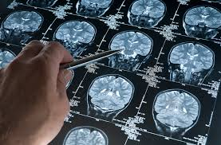

PROJECT-1
Alzheimer's detection using CNN

|
PROJECT-2
Fake News Detection using NLP
|
Description
We collect and preprocess brain imaging data (MRI, PET) to train a Convolutional Neural Network (CNN) for Alzheimer's detection. The model is evaluated and integrated into a clinical application, with a user-friendly web interface for interaction and results display.
|
Description
Fake news detection using NLP involves analyzing the content, style, and patterns in news articles to determine their authenticity. Techniques such as text classification, sentiment analysis, and fact-checking algorithms are applied to identify false information.
|
PROJECT-3
Customer Segmentation
|
PROJECT-4
Movie Recommendation
|
Description
Customer Segmentation involves dividing a customer base into distinct groups based on characteristics like demographics or behavior using clustering algorithms. This approach helps in tailoring marketing strategies and personalized services for enhanced customer engagement.
|
Description
Movie Recommendation systems suggest films to users based on their preferences and past behavior using collaborative filtering or content-based filtering techniques which analyze user ratings and similarities between movies to make personalized suggestions.
|
PROJECT-5
Credit Card Fraud Detection

|
PROJECT-6
Email Spam Detection

|
Description
Credit Card Fraud Detection involves identifying fraudulent transactions by analyzing patterns and anomalies. Techniques such as supervised learning with labeled data or unsupervised anomaly detection are used to enhance security and reduce false positives in transaction monitoring.
|
Description
Email Spam Detection involves classifying emails as spam or not based on their content, sender, and metadata using machine learning techniques such as Naive Bayes, SVM, or deep learning models. The goal is to filter out unwanted emails and reduce the impact of phishing and scams.
|